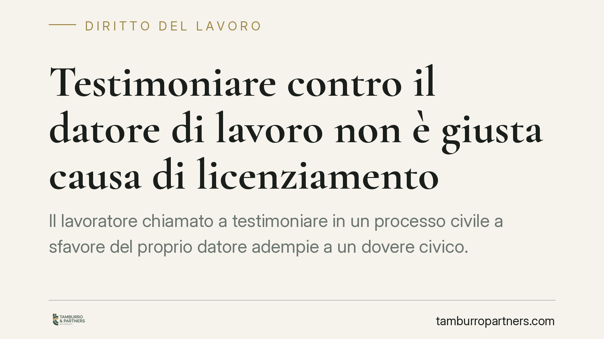

Testimoniare contro il datore di lavoro non è giusta causa di licenziamento
Il lavoratore chiamato a testimoniare in un processo civile a sfavore del proprio datore adempie a un dovere civico. La Cassazione ribadisce che la deposizione veritiera non può fondare un licenziamento disciplinare: il recesso motivato dalla testimonianza rischia la nullità. Vediamo i confini tra fedeltà aziendale e obbligo di dire il vero.

Il caso
Un lavoratore rende testimonianza in un giudizio civile in cui la sua deposizione risulta sfavorevole al datore di lavoro. Il datore reagisce contestando l'accaduto sul piano disciplinare, fino al licenziamento. La Cassazione, sezione lavoro, è intervenuta sul punto affermando un principio destinato a incidere sulla gestione dei rapporti di lavoro.
*Nota: al momento della redazione il riferimento della pronuncia (numero e anno) è in corso di verifica presso le fonti ufficiali. Riportiamo pertanto il principio in forma generale, senza indicazione dell'estremo, per non diffondere dati non confermati.*
Inquadramento normativo
La questione nasce dal bilanciamento tra due doveri contrapposti.
Da un lato, l'art. 2105 del codice civile impone al lavoratore l'obbligo di fedeltà: non deve trattare affari in concorrenza con il datore, né divulgare notizie riservate attinenti all'organizzazione e ai metodi di produzione dell'impresa, né farne uso in modo pregiudizievole.
Dall'altro lato, l'ordinamento pone un dovere civico di rango primario: chi è chiamato a deporre come testimone è tenuto a presentarsi e a dire la verità. La falsa testimonianza è anzi reato, punito dall'art. 372 del codice penale. Il testimone non ha facoltà di tacere o di mentire per proteggere il proprio datore di lavoro.
Il principio consolidato è dunque questo: l'obbligo di fedeltà non arriva a comprimere il dovere di testimoniare il vero. La deposizione resa in giudizio, anche se dannosa per l'azienda, costituisce esercizio di un dovere imposto dalla legge e non un inadempimento contrattuale.
Quando il licenziamento è motivato, in realtà, dalla testimonianza resa, il recesso assume natura ritorsiva. Il licenziamento ritorsivo è nullo perché fondato su un motivo illecito determinante ai sensi dell'art. 1345 c.c. La disciplina dei licenziamenti nulli è oggi richiamata, per i rapporti soggetti alle tutele crescenti, dall'art. 2 del D.Lgs. 23/2015, che prevede la reintegrazione del lavoratore.
Il discrimine: testimonianza veritiera contro abuso
La tutela non è però illimitata. Il confine passa per la veridicità e la correttezza della deposizione.
La testimonianza veritiera, per quanto sfavorevole all'azienda, è protetta. Diversa è l'ipotesi in cui il lavoratore renda dichiarazioni false, calunniose o pretestuose, oppure sfrutti la sede giudiziaria per diffondere gratuitamente notizie riservate senza reale pertinenza con l'oggetto del processo. In questi casi si esce dall'adempimento del dovere e si entra nell'abuso, che può assumere rilievo disciplinare.
Resta fermo, in ogni caso, che nel diritto del lavoro non esiste automaticità sanzionatoria. Anche di fronte a una condotta astrattamente contestabile, la gravità va sempre valutata in concreto, tenendo conto della proporzionalità tra fatto e sanzione.
Implicazioni pratiche
Per il datore di lavoro, il messaggio è netto: reagire alla deposizione sfavorevole con un provvedimento disciplinare è un'iniziativa ad alto rischio. Se il giudice ravvisa il nesso tra recesso e testimonianza, il licenziamento è nullo e comporta reintegrazione e risarcimento.
Per il lavoratore, la deposizione veritiera in giudizio non può essere fonte di responsabilità disciplinare. Chi subisce ritorsioni dispone di strumenti di tutela concreti.
Cosa fare in concreto
Per il datore di lavoro:
- Non avviare procedimenti disciplinari come reazione a una testimonianza resa contro l'azienda: il rischio di nullità per ritorsione è elevato.
- Distinguere con rigore la deposizione veritiera dall'ipotesi di falso o di abuso: solo la seconda può, in concreto, avere rilievo.
- È opportuno documentare in modo autonomo e verificabile ogni eventuale addebito, evitando qualsiasi collegamento temporale o logico con la testimonianza.
Per il lavoratore:
- Rendere sempre testimonianza veritiera: è un dovere di legge e la deposizione è tutelata.
- Conservare copia degli atti del giudizio in cui si è deposto e delle contestazioni ricevute, per ricostruire l'eventuale nesso ritorsivo.
- In caso di provvedimento disciplinare successivo alla deposizione, è opportuno valutare tempestivamente l'impugnazione, nei termini di legge.
Disclaimer
Contributo informativo a cura di Tamburro & Partners Avvocati. Non costituisce parere legale.
Ogni storia di lavoro ha i suoi tempi.
Se gestisci HR e vuoi un confronto su contenzioso, ispezioni o licenziamenti, scrivi allo studio. Ti rispondiamo entro un giorno lavorativo.